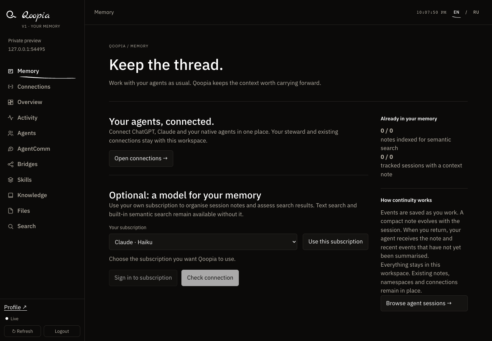

Continue with context
Native Claude Code and Codex integrations save and restore session context. A new session can build on earlier work.
Keep the knowledge. Carry the context.
Give your agents a memory that lives on your computer or your own server.
V1 · macOS Apple Silicon & Linux x64
Signed installers · available now
A decision, a useful finding, the thread of a project. Qoopia keeps knowledge available beyond a single conversation, so connected agents can find it when they need it.
Native Claude Code and Codex integrations save and restore session context. A new session can build on earlier work.
Search notes, knowledge and session history. Built-in embeddings and keyword search run in your installation.
Connect your own agents with separate identities and permissions. Give each one the access its work needs.
A clear view of what’s saved, which environment you’re in, and how your agents connect. No new task launcher to learn.

Install Qoopia on your computer or your own server. Open that same environment from the Mac app, a browser or an embedded panel.
Your agents stay in their own runtimes. When a cloud model calls a tool, it can receive the context you’ve permitted. Self-hosting gives you control over storage and access; it doesn’t mean every interaction stays offline.
Understand the boundaries ↗Notes · knowledge · spaces · history
Your computer or your server
One selected environment, visible in the interface.
Connect independent Qoopia installations by invitation. Share selected knowledge without opening your private memory to everyone.
Prepare a separate copy. Publish its title and short description to an invited group.
Request a specific version. Receive it with permission, separate from ordinary memory.
Receiving a file does not install a skill or add it to memory. Previously received copies cannot be recalled.
How invitations and approvals work ↗Is Qoopia right for you? · Подходит ли вам Qoopia?
Your profile is available as soon as you confirm your email. Your memory dashboard lives in the Qoopia installation on your computer or server. Downloading the installer alone does not create a dashboard.
Already using Qoopia? Open the app to return to your selected dashboard. Save its address in your profile to open it from the website next time.
Open your profile ↗Qoopia is an environment you install and manage. Local and server installations are the same product. Each new user has their own installation, not an account in someone else’s private memory.
Native Claude Code and Codex integrations support session capture and restoration. A generic browser MCP connector gives access to memory tools, but does not provide a full conversation transcript or every session event.
Cloud clients need HTTPS. In Connections, enable external access and confirm your account; Qoopia prepares an address for your installation. Your computer must stay on and connected.
Built-in embeddings and keyword search work locally. Background summaries and model-assisted search use a supported subscription through an official runtime. This authorization is separate from owner sign-in and MCP client access.
A steward is your own agent with permission to administer your environment. You can also select it as your external representative in Bridges. Assigning the role does not start an always-running AI process.
Qoopia V1 source code is publicly available under the MIT license. Signed installers are published separately. GitHub